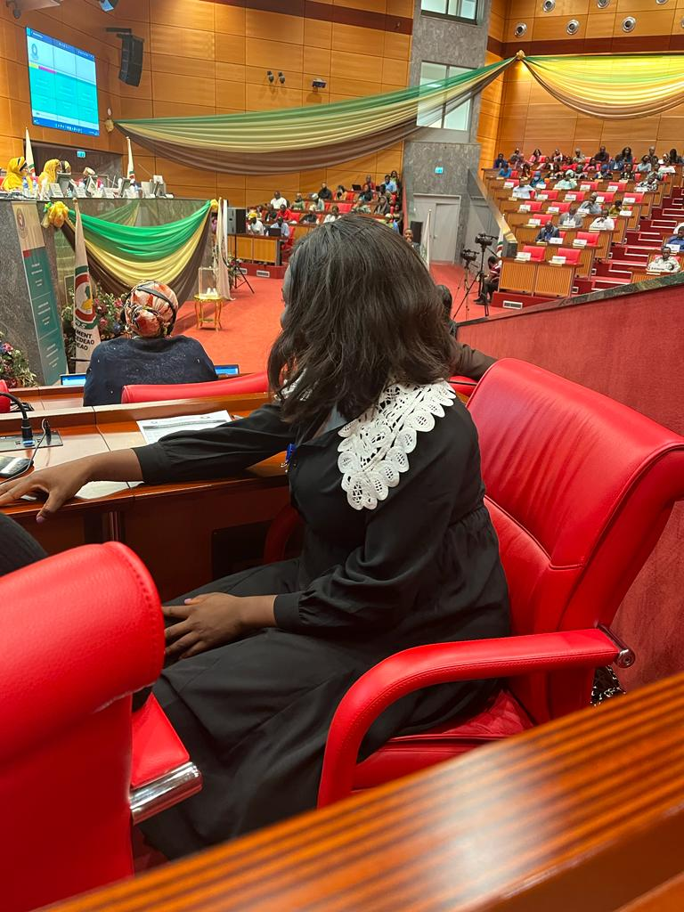
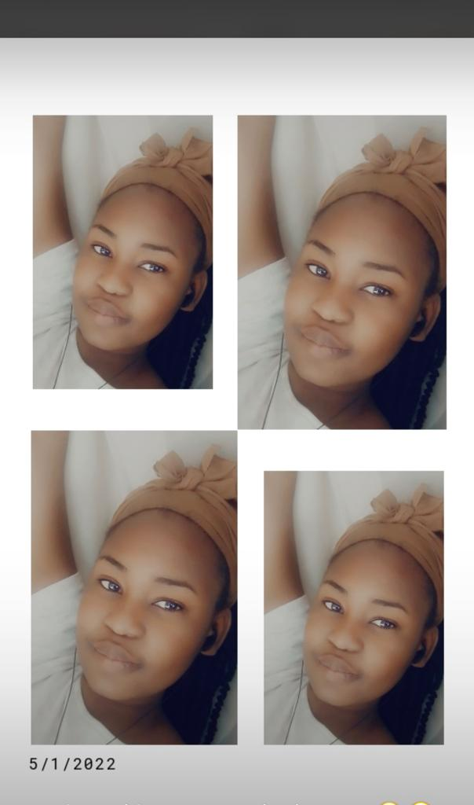
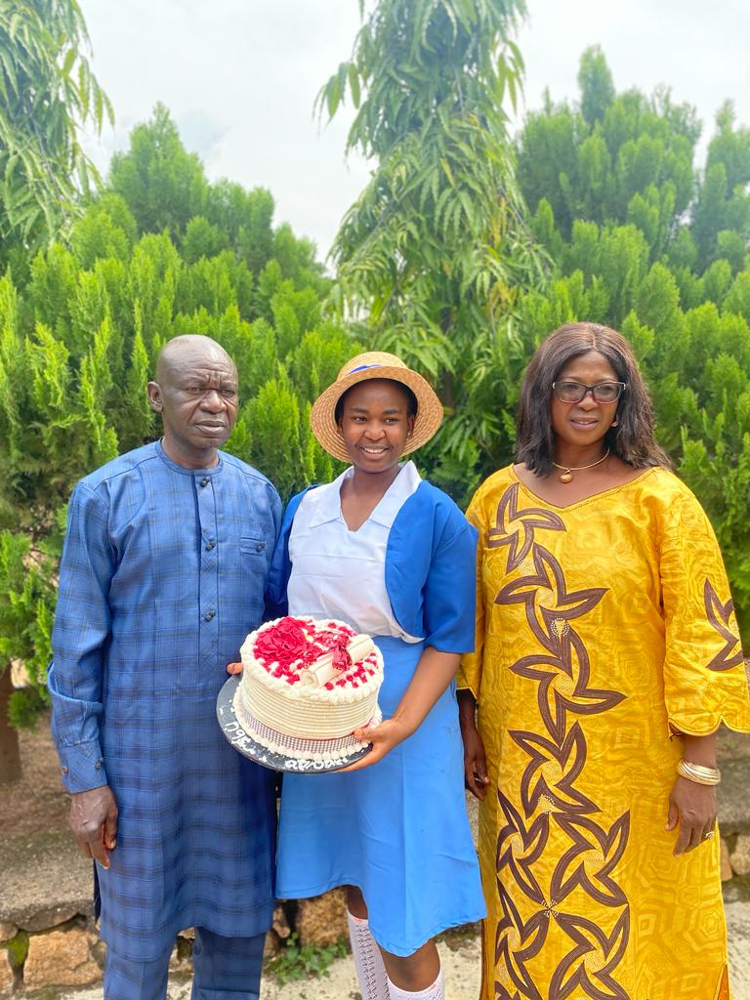
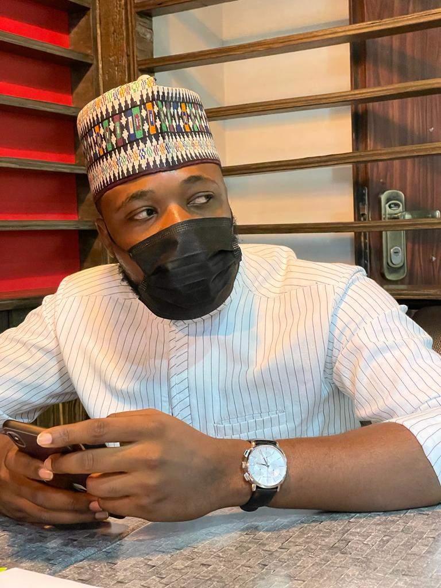

This photo was taken in 2021, i was currently serving till 2022 and all i can say is NYSC is a wholesome experience

So literally serving at ECOWAS was pretty cool, and i was sure that soft corper.i took pictures at this elevator almost evryday

I tried fitting into the corporate world.I could say i was never caught unfresh going to work LOL tho i hardly had makeup on

I find braiding quite difficult but i definitely look good in them. whearas i am a pretty lady

Remeber i said being at ECOWAS for the year was really cool,it came with lots of experiences

Vicky is acually an amazing friend i got quite close to over the past years, and sure had lots of memories together

This was the Parliamentary Seating of the ECOWAS and it was sure inciting and educating participatig in it

I cant even forget this day, i won a whole Laptop in a raffle draw durring the session.It was well deserved though because i really worked my ass off for this Prpgram

Remeber when i said i was never caught unfresh, i clearly wasn't

I Love this boys so much i can't wait to make money to spoil them all

My Babies, despite how much they fight they cannot do without eachother

Kid sis graduated 2021, but yeah we were proud siblings....i love love

You can as well believe that Beauty runs in my Family

I Had a paint and Sip with my gilrs this day, turned out pretty well

This is the only picture i could find around containing my DAD, sshhh

I kept the Arewa slay Girl thingy gowing

Oouhh i passed outta Nysc, it felt extremely amazing, now back to the real world

The plan was to Finish my masters in Nigeria then travel abroad later, but the long strike made that plan hopeless. I began processing my study to Poland, with Keshi Help and encouragement

I put in my all for this relocation to work,i put in my everything time money and efforts. At a point i was mentally drained and getting depressed. Things didnt go quite well as expected

This is Toyin, we actually aren't close anymore but he really played a significant role when things were not going as planned,he was there for me,kept encouraging me as well cheer me up despite he was not in Nigeia. Sadly we were not quite compatible when he came over to Nigeria so we ended up not dating.

Later things seemed to be falling in place a bit,i received few lectures online and i saw myself in Poland already,but there were series of delays in which i encountered

I enrolled in baking classes to get myself off depression,i can't really say it helped

Mum became a Fellow Chartered accountant. It was a great milestone

I wrote my massters exams in Nigeria, still anticipating Poland worked out

This was me smilimg trying to go out with a smile on while in soo much pain.I literally cried almost everyday this period

I reconnected with Mary after years of not talking, we painted and had fun

While being depressed the only thing i needed was lots of money

Obas and i became quite close at some point and i didnt have to always feel horrible about my situation

Sandra got married and i was definitely ready to pepper

Adlyn got married and it was fun all the way, best wedding i attended over the year

This phase was really a trying moment for me,i asked God soo many questions and all i needed was answers. By this time i had reaslised i couldn't make it to Poland till 2023. i cried and cried. Got into deeper depression, my anxiety level hit, literally everything wasnt okay with me... Did i note that Dad was also kidnapped not so long during this Phase, it was really crazy

This was me picking myself up, accepting fate, putting up a smile and beleiving God had bigger plans for me
In all what Happened over the year i am still Glad i made it to tell the story,2023 is going to be my appointed year.Knowing all my dreams, aspirations and everything i ever wished for would come to pass. Yollo......